Descargar este tutorial en PDF
Este documento presenta una metodología completa para implementar Scrum utilizando exclusivamente las herramientas nativas de GitHub Projects, eliminando la necesidad de herramientas externas como Jira. La propuesta se centra en crear un flujo de trabajo ágil centrado en el desarrollador que integra la gestión de proyectos directamente en el entorno donde reside el código.
Información
La creación de un proyecto la realizaremos a nivel de Organización. Esto permite gestionar múltiples repositorios dentro la organización, facilitando la coordinación en equipos que trabajan en varios repositorios. También es posible crear proyectos a nivel de Repositorio.
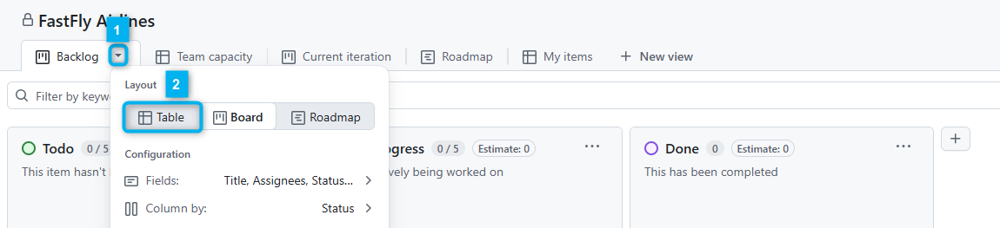
Como se muestra en la imagen, en la vista de "Backlog" del proyecto, desplegamos las opciones 1️⃣ y seleccionamos la vista de "Table" 2️⃣.
En esta vista crearemos la User Stories de nuestro proyecto como Draft (Borrador) 3️⃣. Para este ejemplo hemos introducido las user stories de la actividad práctica de aviones de papel que nos reportó el Stakeholder (cliente) a través del Product Owner.
En este punto, aún no rellenaremos el valor del resto de columnas.
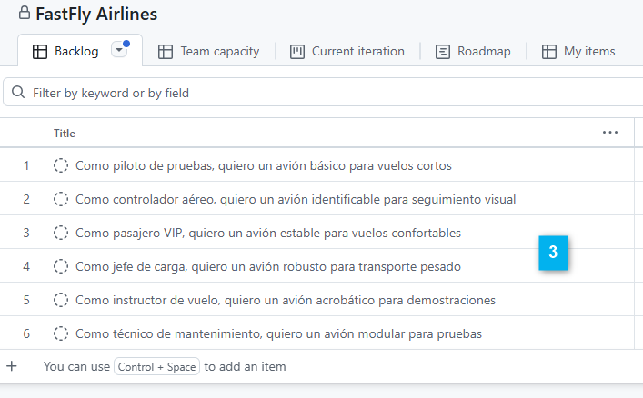
Siguiendo la filosofía del libro "Start with Why" de Simon Sinek, comenzaremos por definir los criterios de aceptación que nos ayudarán a entender el propósito de cada User Story. Posteriormente, asignaremos los story points para estimar el esfuerzo necesario para completar cada historia.
Nota
Para puntuar las User Stories, usaremos la columna Estimate por lo que vamos a borrar la el campo Size que nos creó la plantilla en la vista de Backlog y que no la vamos a utilizar.
Para ello, pulsamos seleccionamos en la columna Size la opción Field settings como se muestra en la imagen de ejemplo y posteriormente pulsaremos el botón Delete field.
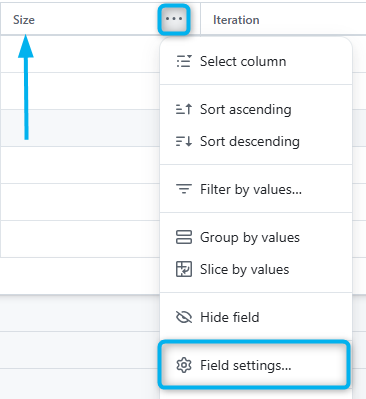
Recuerda que en la actividad práctica de aviones de papel, cada User Story tiene un valor de esfuerzo en Story Points (SP) y unos criterios de aceptación específicos que definimos en una tabla.
| ID | User Story | Story Points | Criterios de Aceptación |
|---|---|---|---|
#1 |
Como piloto de pruebas, quiero un avión básico para vuelos cortos | 3 SP | • Vuela mínimo 2 metros • Tiene el logo de AeroDAM |
Recuerda que podemos evaluar el esfuerzo de cada User Story utilizando la técnica de Planning Poker para llegar a un consenso en el equipo.
Para introducir estos datos, debemos hacer clic en el título de una User Story, se abrirá un panel lateral donde podremos añadir los detalles necesarios en markdown y si pulsamos sobre el texto Edit podremos editar el contenido. Escribiendo en markdown 1️⃣ y luego pulsaremos Update Comment 2️⃣. Por último, introduciremos el valor de los Story Points en la columna Estimate 3️⃣ como se muestra en la imagen de ejemplo.
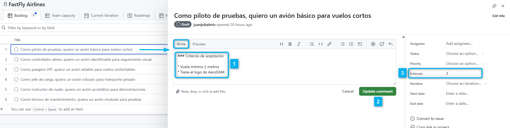
Este proceso lo repetiremos para todas las User Stories que hemos creado en el paso anterior.
Por último, otro campo que podemos rellenar es el de Priority y así establecer la prioridad de cada User Story. De momento, podemos ponerles a todas la prioridad P1 (Medium). Si por ejemplo, más adelante, llega una urgente o el Product Owner nos indica que una User Story es más importante que las demás, podemos cambiar su prioridad a P0 (High).
Si te fijas cada User Story que hemos creado en el Backlog en el paso 2 la hemos creado como Draft Issue (Borrador). Esto es porque aún no hemos empezado a trabajar en ellas.Cuando vayamos a empezar a trabajar en una User Story, la convertiremos en un Issue normal.
Por tanto, la diferencia entre un Draft Issue y un Issue es que el primero está en estado de borrador y no se puede asignar a nadie ni etiquetar, mientras que un Issue normal sí se puede asignar y etiquetar. Además y más importante, una Issue tiene que estar asignada a un repositorio de nuestra organización, mientras que un Draft Issue no.
Resumen
Podemos resumir que una Issue es una tarea o historia de usuario asignada a un repositorio específico y que permite discursiones, seguimiento y otras funcionalidades que una Draft Issue no permite.
Para convertir una Draft Issue en un Issue normal, hacemos clic en el título de la User Story que queremos convertir como hicimos para describir los criterios de aceptación. Se abrirá un panel lateral donde podremos ver los detalles de la User Story. En la parte superior derecha del panel, veremos un botón que dice Convert to issue. Hacemos clic en ese botón 1️⃣.
A continuación, buscamos el repositorio 2️⃣ y una vez encontrado los seleccionamos 3️⃣. Finalmente, pulsamos el botón Convert 4️⃣ para completar la conversión.
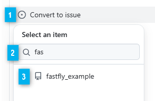
Nos aparecerá un nuevo panel ampliado, que nos permitirá asignar la Issue a un miembro del equipo, añadir etiquetas, asignar un tipo, etc.
Nosotros vamos a asignar el tipo (Type) como User Story para indicar que la Issue se trata de una de las historias de usuario que hemos definido en el Backlog.
Nota
Posiblemente no aparezca este tipo, pero uno de los propietarios de la organización puede crear este tipo de Issue personalizado. Aquí tienes un enlace a la documentación oficial para saber como hacerlo: Creating a custom issue type.
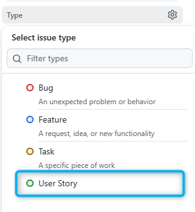
Si volvemos a la vista de Backlog, podemos hacerlo de forma rápida pulsando en el icono [+] para añadir un nuevo campo a la vista y seleccionando la opción Type. Movemos la columna al principio y podemos hacer la asignación de forma rápida. No debemos olvidar pulsar el botón Save para guardar los cambios en la vista.
En la siguiente imagen podemos ver que hemos convertido todas la entradas del Backlog en Issues normales y les hemos asignado el tipo User Story.
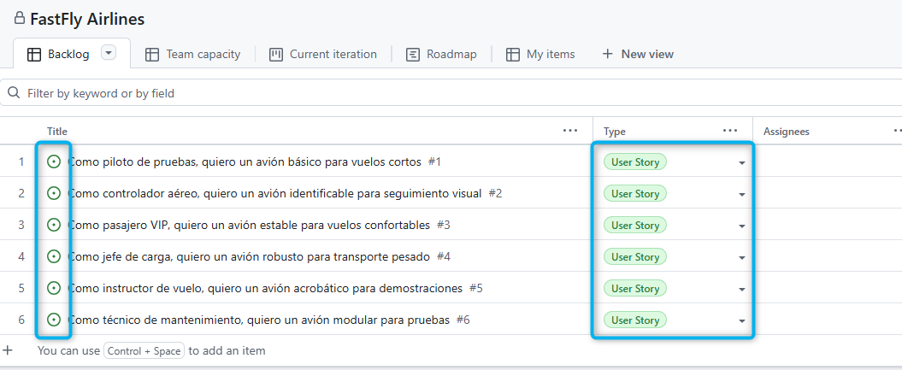
Al realizar la reunión del Sprint Planning, seleccionaremos las User Stories que vamos a trabajar en el próximo Sprint. Para ello, en primer lugar definiremos la duración del Sprint y crearemos las Iteraciones (Sprints) en el proyecto. Ten en cuenta que en GitHub Projects, las 'Iterations' son equivalentes a los Sprints en Scrum.
Para ello, como se muestra en las imágenes a continuación, en la vista de Backlog del proyecto, desplegamos las opciones del overflow menú ... arriba a la derecha y seleccionamos Settings. A continuación, seleccionamos la pestaña Iterations y nos aparecerán alguna por defecto como se muestra en la imagen.
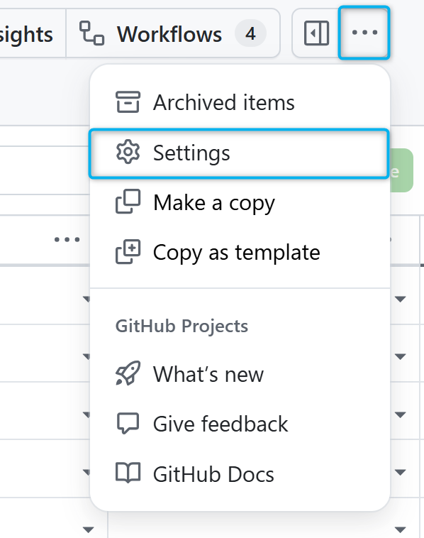
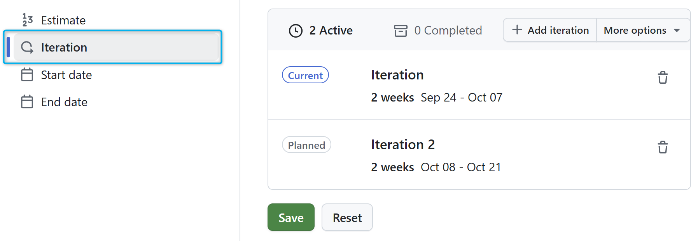
Podemos cambiar el nombre por ejemplo a Sprint 1 y definir la quincena duración del Sprint.
En este punto, podremos planificar de forma aproximada todo los Sprints de nuestro proyecto.
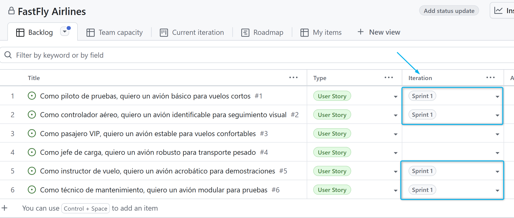
Como se muestra en la imagen, una vez definido el Sprint, y las User Stories a implementar según su estimación en Story Points y prioridad. En el campo Iteration, que hemos movido junto a Type, seleccionamos el Sprint actual Sprint 1 y automáticamente se asignarán a dicho Sprint.
Si ahora vamos a la vista 1️⃣ Current Iteration, que viene definida en la plantilla, veremos las User Stories que hemos asignado la iteración actual 2️⃣ (iteration:@curret) Sprint 1.
Podremos ver la estimación total en Story Points de las User Stories que hemos asignado al Sprint 3️⃣ y las PBIs del Backlog principal que hemos asignado a la iteración (Sprint 1) 4️⃣.
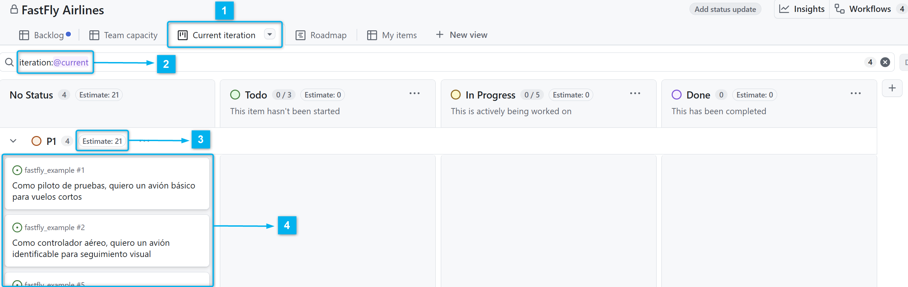
Vamos a renombrar la pestaña de la vista a Sprint Actual para que nos quede más claro su contenido.
Este paso es muy importante, ya que las tareas son las que nos permitirán hacer el seguimiento de cada User Story dentro del Sprint. Supongamos que definimos las siguientes tareas paras las User Stories de la actividad práctica de aviones de papel que hemos añadido al Sprint Backlog.
| ID | Tareas Detalladas |
|---|---|
#1 |
1. Diseñar y doblar un modelo simple de avión de papel. 2. Dibujar o pegar el logo de "AeroDAM" en una de las alas o el fuselaje. 3. Realizar pruebas de lanzamiento para asegurar que el avión vuela al menos 2 metros de distancia. |
#2 |
1. Diseñar y doblar un avión de papel con una estructura estable. 2. Asignar y escribir un número de serie único y visible en el avión (p. ej., "AERO-001"). 3. Colorear el avión usando al menos dos colores distintos para facilitar su identificación. 4. Probar el vuelo para verificar que supera los 3 metros de distancia. |
#5 |
1. Seleccionar un diseño de avión de papel específico para acrobacias (p. ej., con alerones ajustables). 2. Escribir el nombre del modelo en un lugar visible (p. ej., "Acrobat-X"). 3. Añadir decoración con líneas y formas que sugieran velocidad y aerodinamismo. 4. Realizar lanzamientos de prueba ajustando los pliegues para que el avión complete un giro o un loop. |
#6 |
1. Doblar el fuselaje principal del avión. 2. Doblar las alas como piezas separadas. 3. Unir las alas al fuselaje utilizando trozos de cinta adhesiva para que puedan quitarse y ponerse. 4. Dibujar un código QR en el fuselaje. 5. Probar el ensamblaje final para asegurar un vuelo mínimo de 2 metros. |
Por ejemplo, vamos a definir las tareas de la User Story #1. Para ello, hacemos clic en el título de la User Story y se abrirá un panel lateral de detalles. Pulsaremos sobre la opción [Create sub-issue].
Nos aparecerá el dialogo de creación de una nueva Issue donde:
1️⃣ Definiremos el título de la tarea y escribiremos su descripción.
2️⃣ Seleccionaremos el tipo (Type) como Task para indicar que se trata de una tarea.
3️⃣ Nos aseguraremos de que está al proyecto correcto.
4️⃣ Podemos ir a la pestaña Preview para ver como queda la descripción en markdown.
5️⃣ Si queremos crear más tareas del mismo tipo, podemos marcar el checkbox Create more sub-issues.
6️⃣ Finalmente, pulsamos el botón Create para crear la tarea.
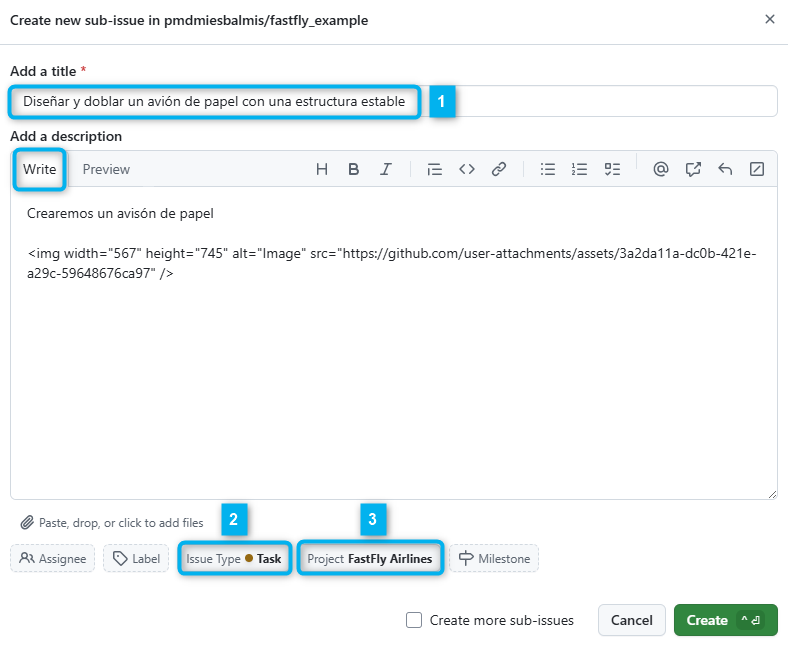
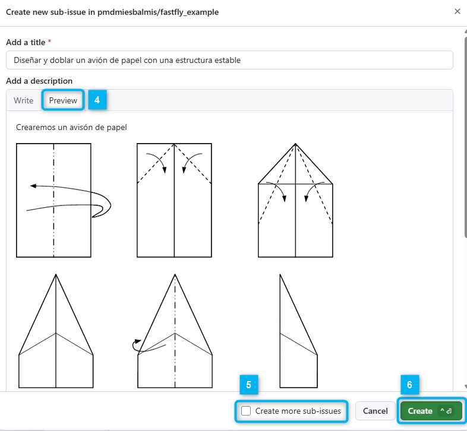
Una vez creadas todas las tareas (sub-issues), al volver al panel de detalle de la User Story, veremos un resumen de las tareas creadas y cuantas están completadas (0 / 3).
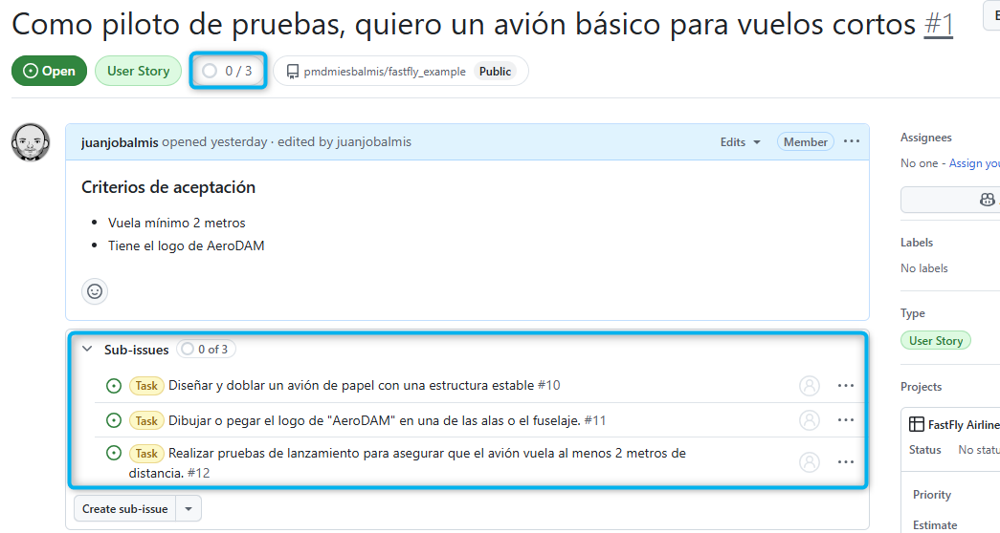
Importante
Ya hemos definido las tareas como sub-issues, pero estos no heredan ningún valor de la User Story padre, por lo que debemos asignarles la iteración (Sprint 1), una estimación en Story Points y una prioridad.
Para hacer este proceso tenemos diferentes opciones:
Nosotros vamos a optar por la opción 2, para ello, como se muestra en la imagen...
1️⃣ En la vista de Backlog añadiremos el campo Parent issue y lo moveremos junto al título.
2️⃣ Moveremos cada tarea justo debajo de su User Story padre para tener una mejor visualización organizativa.
3️⃣ Expandiremos, como si se tratase de una hoja de cálculo, los valores de las celdas Iteration y Priority para que tengan los mismos valores que su User Story padre.
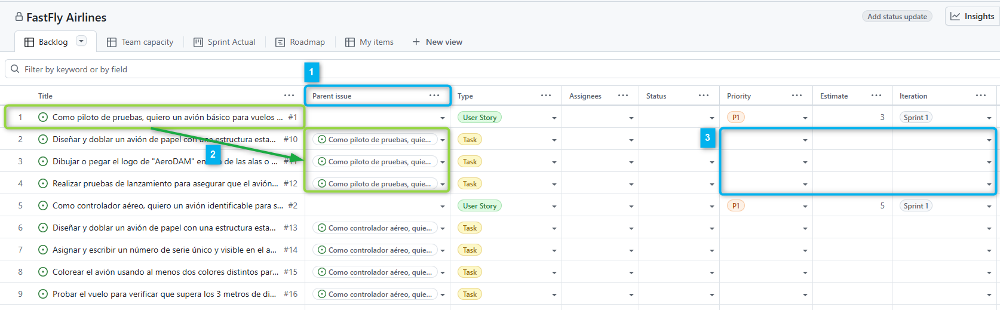
La estimación en Story Points la haremos de forma individual para cada tarea. Asignado un valor de la sucesión de Fibonacci (1, 2, 3, 5, 8, 13, 21) usando Poker Planning o decidiendo un tiempo en horas o días para completar la tarea de acuerdo a un valor de la sucesión.
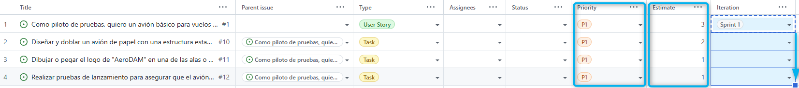
Si volvemos a las vistas que renombramos como Sprint Actual, veremos que tenemos un montón de tarjetas correspondientes a las issues de tipo User Story y las sub-issues Task mezcladas y además, la información que aparece no me permite distinguir entre unas y otras.
Nota
Realmente la vista del Sprint Actual como User Stories sería para el Product Owner y así tener una idea global de cómo va el trabajo y la vista de Tasks sería usada por el Scrum Master y el Equipo de Desarrollo.
Para añadir más información a las tarjetas:
Desplegamos las 🔽 opciones de la vista y configuramos seleccionando la opción Fields los campos que se van a visualizar en las tarjetas. Cómo se muestra en la imagen vamos a añadir los campos Type, Estimate, Parent issue y Sub-issues progress. Este último, mostrará una barra de progreso con el número de tareas completadas de cada User Story que permitirá al Scrum Master y al Product Owner tener una idea rápida del progreso de cada historia. (Haz click en Save para guardar los cambios).
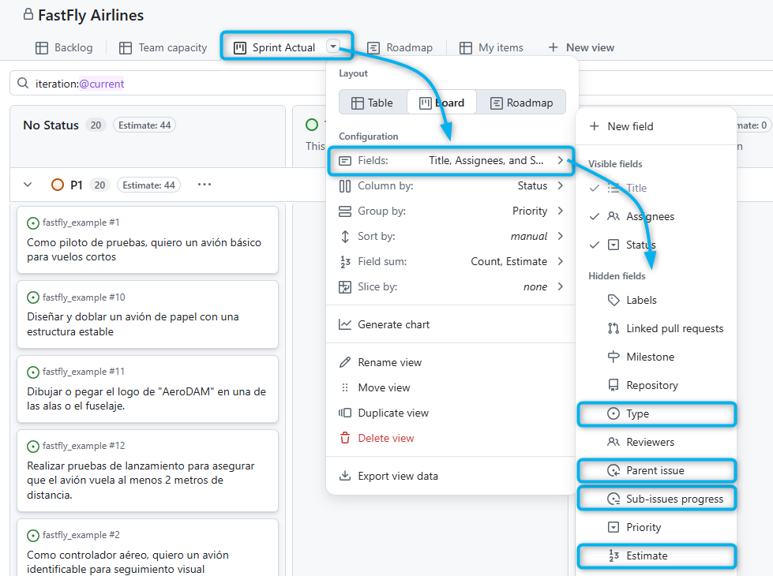
Si volvemos a desplegar las opciones de la vista, seleccionamos Slice by; y seleccionamos la opción Type (Recuerda hacer clock en Save para guardar los cambios). Podremos rápidamente discriminar entre los PBIs de tipo User Story y las tareas de tipo Task como se muestra en las siguientes imágenes:
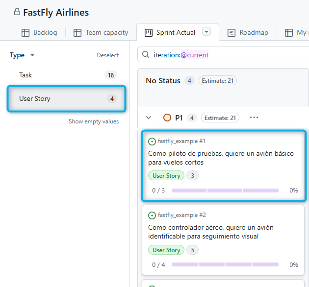
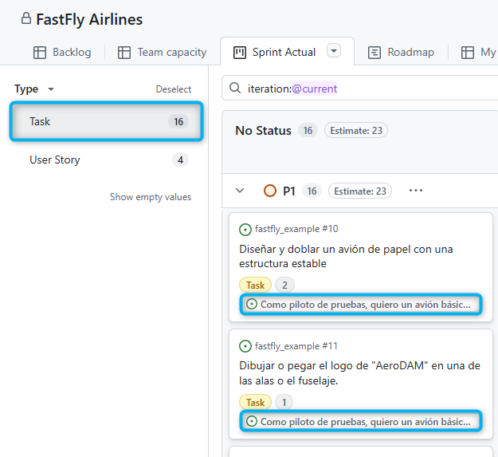
Revisaremos los 'status' de los User Stories y las tareas asignadas en el Sprint Actual y lo cambiaremos de estado según el progreso del trabajo y los criterios de aceptación definidos. Recuerda que el Scrum Master facilitará la reunión y se asegurará de que el equipo se mantenga enfocado en los objetivos del Sprint y en la resolución de impedimentos.
Pasaremos todas las User Stories y tareas a la columna To Do para indicar que ya están listas para ser trabajadas en el Sprint Actual (iteracción @current).
Por ejemplo, supongamos que el equipo empieza a trabajar en las tareas de la User Story #1.
Cambiaremos el 'status' de la User Story #1 In Progress.
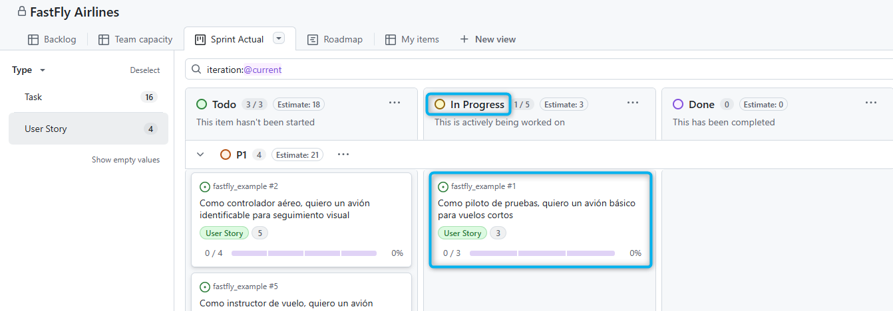
Las tareas asociadas a dicha User Story las moveremos a la columna To Do y conforme se asignen a los miembros del equipo de desarrollo, las moveremos a la columna In Progress.
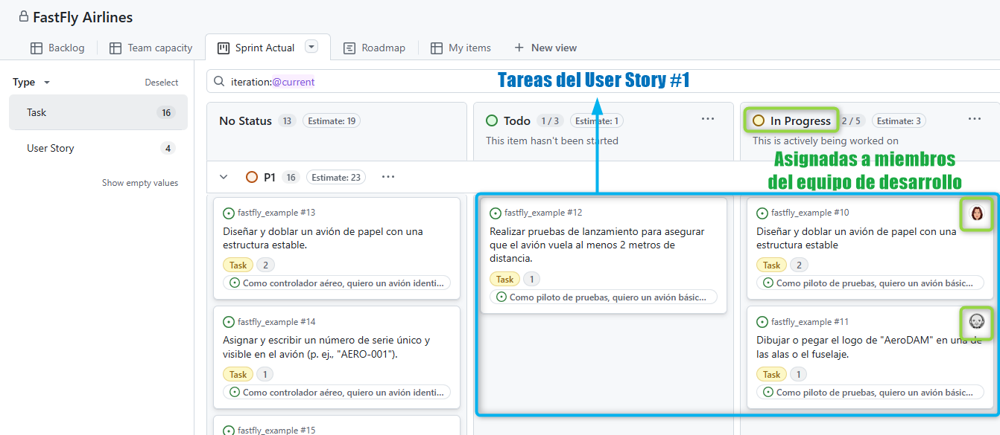
Conforme se vayan completando las tareas, el progreso en las User Stories se irá actualizando automáticamente, mostrando el número de tareas completadas y una barra de progreso visual. Sin embargo, la consistencia entre user stories y tasks dependerá de que el equipo mantenga actualizados los estados de las tareas.
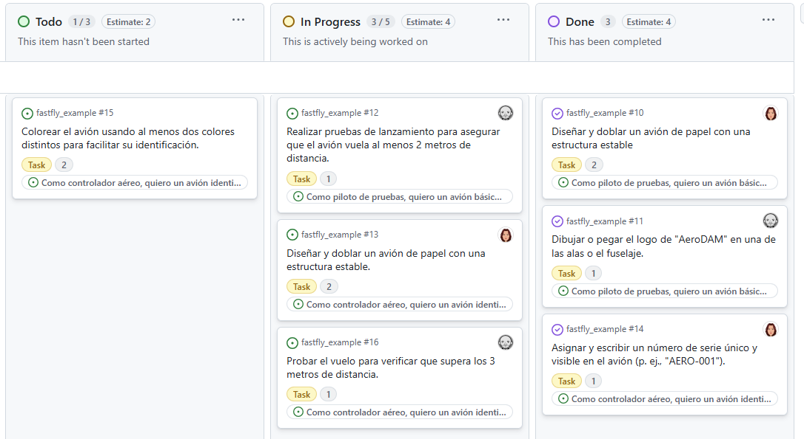
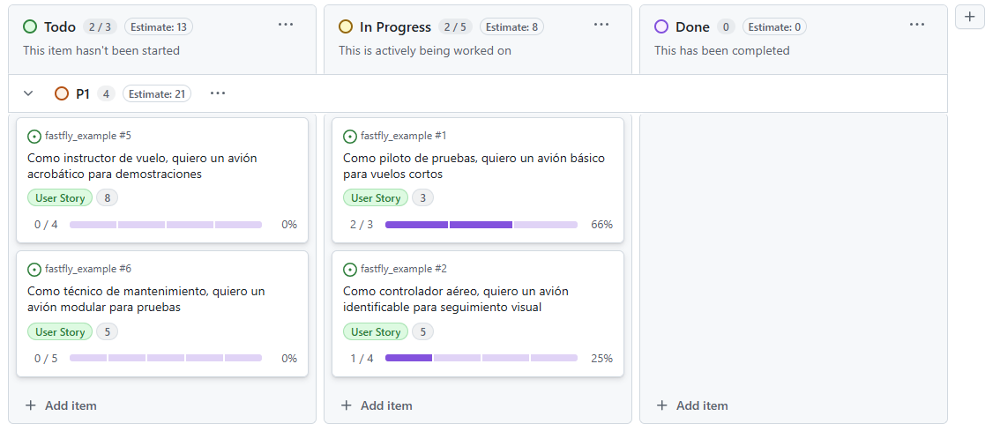
Además, no deberá haber ninguna tarea sin asignar en los estados In Progress o Done.